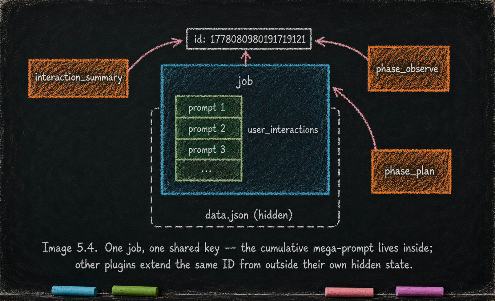

Job Lifecycle — job_core
Essay 5.4 — The Always-On Digital Cortex, Part 4 of 9.
Essay 5.3 covered the ceiling — keeping the agent under the model’s reasoning curve. This part covers the spine: the always-on plugin that gives the seed agent a notion of what work it is doing.
What it owns
job_core exists to compartmentalize the seed agent’s work. The unit of compartmentalization is the job — a container for everything the agent does between the moment a piece of work begins and the moment it is complete. Every prompt, every reasoning cycle, every action belongs to one. The plugin works by routing each user prompt into a job (creating a new one if none is focused, attaching as an interaction if one is) and by refusing to let the agent stop while any job remains active. It applies on every prompt the user submits, every Stop event the agent triggers, and every [JOB-COMPLETE] claim the agent makes. ⓘ
The cumulative mega-prompt
A user-prompt hook intercepts every user prompt and either creates a new active job or appends the prompt as an interaction on the currently focused one. The interaction field of a job is what the seed agent treats as its dynamic mega-prompt. In most agent designs, "the prompt" is a one-off — text handed to the model at the start of the exchange and rarely revisited. Here, the prompt is cumulative: the first user message in a session seeds a new job, every later prompt and every Q&A appends into the same job’s interaction list, and the whole list is what the agent reads as its instruction set going forward. The next plugin in this layer — interaction_summary — keeps that mega-prompt legible as it grows. ⓘ
The shared key
The interaction list is just one form of state attached to a job. When a job is created it is assigned a unique ID — a timestamp from the moment of creation — and the base job object (name, status, interaction list, dependencies, completion fields) lives in job_core's own hidden state. Other plugins that need to carry context about that job extend the same job object under the same ID inside their own hidden state. interaction_summary does exactly this — when a job’s interactions cross the summarization threshold, the plugin creates a mirror entry under the job’s ID and starts appending summary blocks there.
The phase plugins (Essay 6) do it on a larger scale: each phase plugin keeps its own per-job bookkeeping — scope multipliers, point ledgers, plan-file pointers, footer markers — keyed by the same ID. No plugin reads another’s hidden state directly, but the shared key lets each plugin’s view of the job line up with every other plugin’s view without runtime coordination. That consistency is what makes the job a true cross-plugin compartment. ⓘ

The refusal to stop
The job structure is also what keeps the agent working: the same shared key that lets every plugin reach the focused job is what lets job_core enforce a single continuous work loop. A turn-end hook refuses to let the agent stop whenever any active or pending job remains. The refusal message is phase-aware — every OPEVC phase gets its own reminder set (observation phases get prompts to check CLAUDE.md before synthesizing, execution phases get prompts to keep edits inside the altered-list, and the others carry phase-specific reminders of the same kind).
The refusal functions as a re-orientation, not a flat no: when the seed agent tries to stop prematurely, the message reminds it of what its current phase still expects before stopping is even on the table. The agent cannot stop while any job is active, and pending jobs scheduled ahead extend the loop across whatever queue the operator — or the seed agent itself, when it queues follow-up work — has set up. The seed agent runs continuously until every active and pending job has been completed, which is what makes long-running, hands-off operation possible. ⓘ
Staged completion
Completion is staged. The current prototype runs two stages — a pre-call hook validates that any [JOB-COMPLETE] question contains the focused job’s name, runs at least a hundred words of review, and presents exactly the "Review" and "Approve completion" options; then a follow-up post-call hook walks the focused job’s dependency list, refuses approval if any dependency is still unfinished, and only then records the user’s approval. The architectural fact is the staging itself: completion does not collapse into a single moment. Future seed-agent generations can graduate to automated criteria, verifier subagents, or multi-stage approval chains. ⓘ
What would break without it
Without job_core, the agent has no notion of what work am I doing. Every prompt is a one-off, there is no thread of intent to come back to, no place for follow-up work to live, no signal that says the agent is or isn’t done. The cognitive horizon collapses to the current turn — and everything the rest of the always-on layer is built to support has nothing structural to attach to. ⓘ
What you would customize
job_core's architecture is portable; its specifics are tunable.
You would re-shape the unit of compartmentalization. The current prototype calls it "a job" — a generic noun that fits software work. Your seed may want a richer noun for your domain: a research seed might call the unit an "investigation"; a consulting seed might call it a "client engagement"; a legal-research seed might call it a "matter." The schema doesn’t care what you call it; the mental model and the voices do. Renaming the unit shifts the operator’s framing.
You would extend the stop-gate refusal voices. The current prototype ships one per OPEVC phase. If your seed adds new phases (a phase_research between OBSERVE and PLAN, say), each new phase gets its own stop-gate voice reminding the agent what that phase still expects. The voice library grows with your phase library. ⓘ
You would deepen the completion staging. Two stages is the current shape — name-validation + dependency-walk. A larger system may want more: a verifier-subagent stage that runs acceptance checks, a peer-review stage where a second agent audits the work, a delay-gate stage that forces a cool-down before approval lands. The hook architecture supports staging by composition; each new stage is its own pre/post hook.
You would tune the mega-prompt strategy. The current cumulative-list approach treats every interaction as load-bearing. Your seed may want a sliding window (last N interactions), topic-filtered slices (interactions matching a domain tag), or domain-specific summarization (research seeds compress citations differently from consulting seeds compress decisions). The user_interactions array is one shape — the mega-prompt could read from any structured field that survives across the session.
What you would not do is collapse the job into the current turn. The whole always-on layer attaches to the job structurally; without the compartment, the rest of the layer has nothing to hang on.
The next part covers the plugin that keeps the cumulative mega-prompt legible as it grows past hundreds of interactions.
Essay 5.4 — The Always-On Digital Cortex, Part 4 of 9.
Previous: Essay 5.3 — Context Window Discipline (brain_guard) — the progressive squeeze that keeps reasoning sharp. Next: Essay 5.5 — Cross-Session Memory (interaction_summary) — shape-compels-production applied to the mega-prompt.
Comments